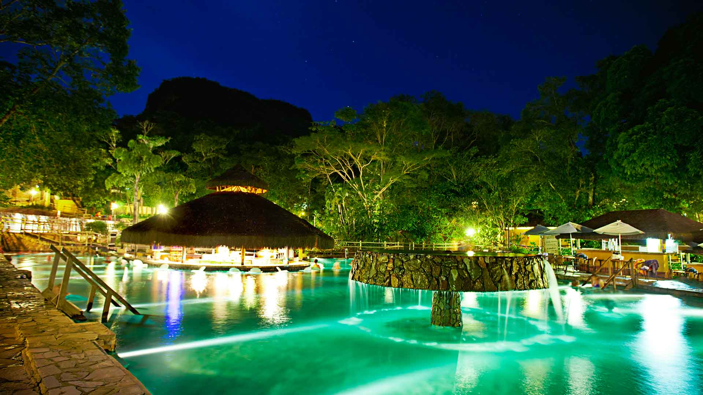
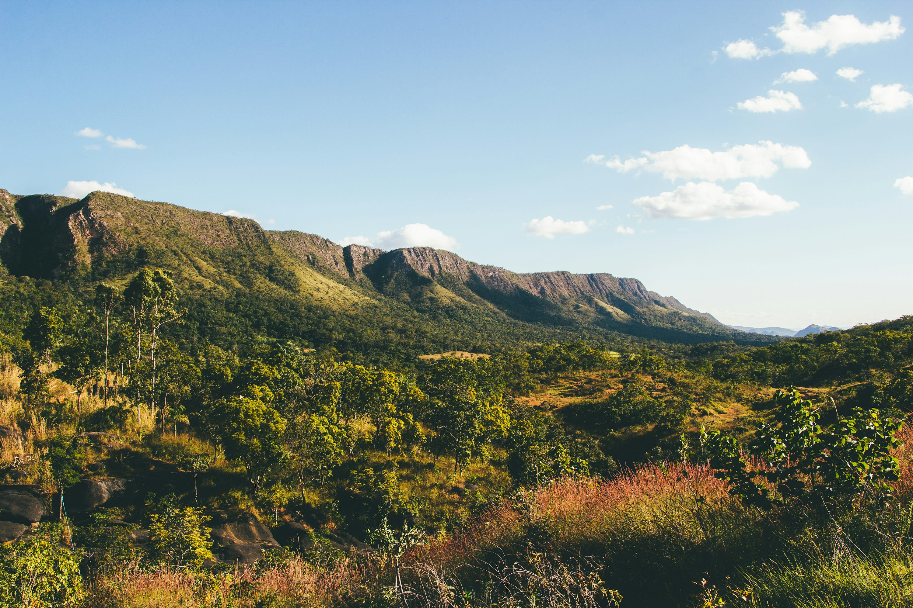

BoraBrasil

Caldas Novas (GO)
O maior moinho de vento da América Latina, símbolo da cidade. Possui mirante com vista panorâmica e conta a história dos imigrantes holandeses.

Bonito (MS)
Um dos principais atrativos de Holambra. Passeios guiados pelos belíssimos campos de produção de flores, com cenários perfeitos para fotos.
